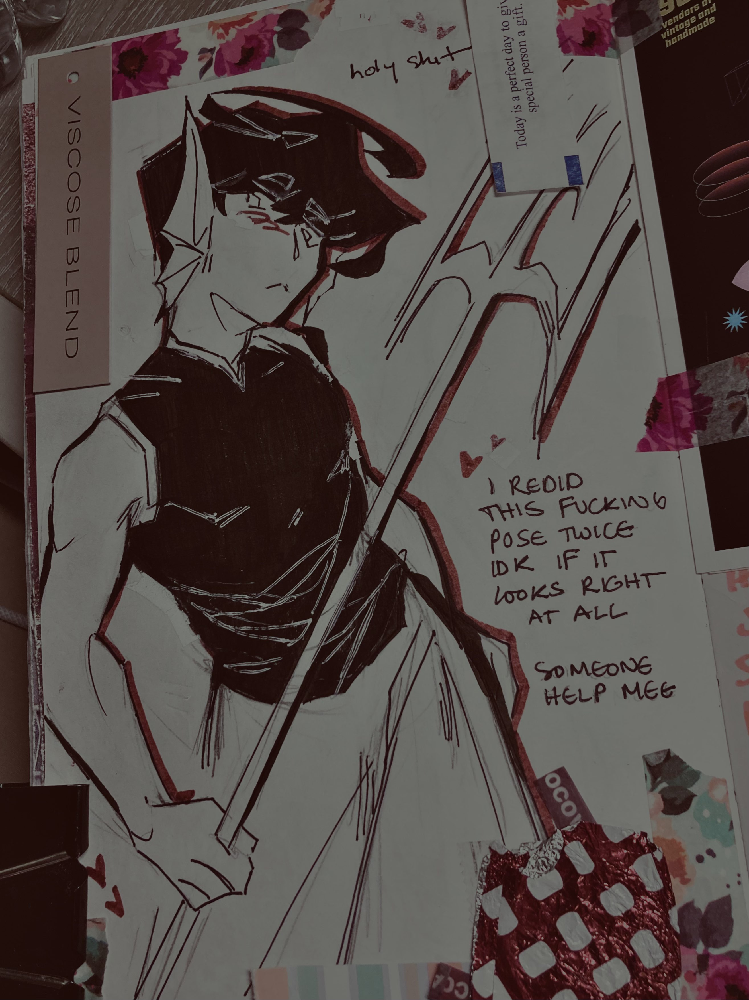
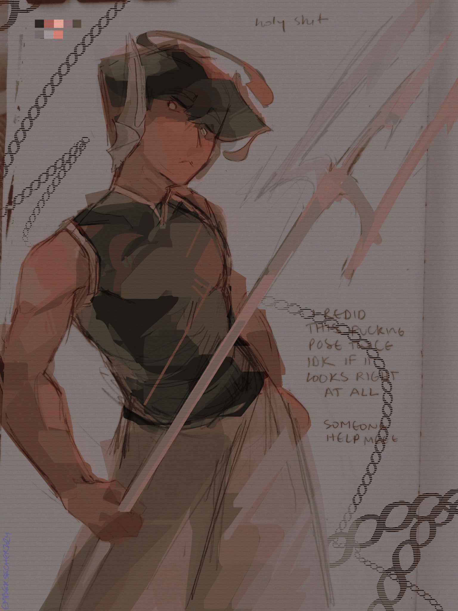

sketchbook spread. ok.
creation date: jan 30
characters featured: enzo
predictable.
you know. i went through the stages of grief drawing this, i made a banger sketch, [i MEAN it when i say the sketch was better than the lineart. speaking of which.] i hated the lineart, seethed about it, fixed it, then accepted it. you can still see the fruits of my peril in the second page lol.

what is girlie yapping about

i was so dissatisfied, in fact, that i tried to color it digitally but then gave up and went back to the traditional version 😭
all of this fuss and i still forgot to draw his tail. yknow i . yk. goodbye.